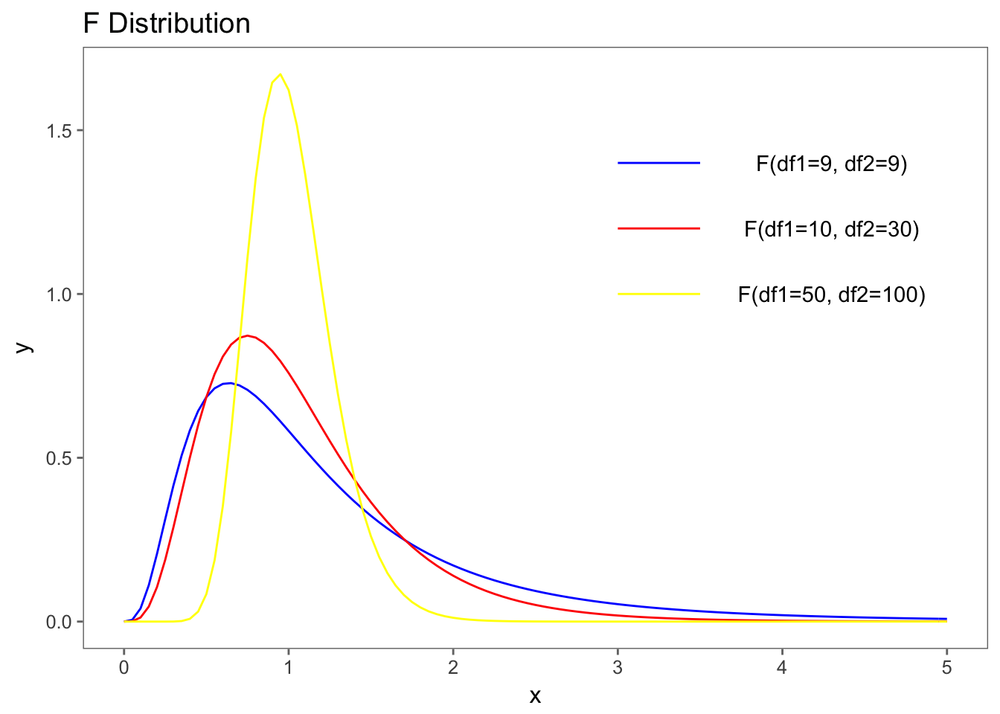

3 LM Modelgüte
load(url('https://github.com/systats/macro_project/raw/master/project_macro.Rdata'))
# filter data
dat <- project_macro %>%
filter(year == 2010)
fit0 <- lm(gov_cens ~ 1, data = dat) # Nullmodell
fit1 <- lm(gov_cens ~ engage_soc, data = dat) # bivariat
fit2 <- lm(gov_cens ~ engage_soc + pol_stability, data = dat) # multivariatAls nächstes wollen wir die Anpassung eines Modells an die Daten testen. Das wird meistens als Modellgüte oder goodness of fit bezeichnet. Jede Modellfamilie hat ihre eigene Teststatistiken, für Lineare Regression sind das
- Standardschätzfehler (RSE)
- \(R^2\)
- F-Statistik
Zwar werden diese Maße in der Praxis dazu verwendet Aussagen über ein spezifisches Modell zu erhalten, allerdings sind diese nur zum Modelvergleich geeignet. Wenn also mehrere Regressionsmodelle geschätzt wurden, kann somit das beste Modell identifiziert werden. Zuerst jedoch werden die drei Statistiken einzeln vorgestellt. Eine tidy Übersicht der berechneten Gütemaße kann mit broom abgerufen werden.
broom::glance(fit1)## r.squared adj.r.squared sigma statistic p.value df logLik
## 1 0.5992541 0.5967955 0.9458732 243.7415 3.455146e-34 2 -223.937
## AIC BIC deviance df.residual
## 1 453.8741 463.1919 145.8322 1633.1 RSE
Der Standardfehler des gesamten Modells (Residual Standard Error RSE) beschreibt die durchschnittliche Standardabweichung der Residuen \(\varepsilon_i\) von der Regressionsgerade. Die Formel dazu
\[RSE = \sqrt{\frac{1}{n-2}\sum^n_{i=1} (y_i - \hat y_i)^2} = \sqrt{\frac{1}{n-2}\sum^n_{i=1} \varepsilon^2} = \sqrt{\frac{\sigma^2}{n-2}} = \sigma\]
n <- nrow(dat)
sqrt(1/(n-2)*sum(fit1$residuals^2))## [1] 0.9458732sigma(fit1)## [1] 0.9458732Der durchschnittliche Fehler des Zensur Indexes von der Vorhersage beträgt 0.94 Einheiten.
3.2 R Squared
Während der RSE sich rein auf die Residualvarianz stützt, quantifiziert das \(R^2\) die Proportion an Varianz in Y, die durch das Model gebunden werden konnte. Dazu wird das spezifizierte Modell mit dem dazugehörigen Nullmodell (Referenzmodell) verglichen. Das Verhältnis hat die schöne Eigenschaft, dass \(R^2\) zwischen zwischen 0 und 1 liegt und als PRE-Maß (Proportional Reduction in Error) interpretiert werden kann.
summary(fit1)$r.squared## [1] 0.5992541Demnach konnte das statistische Modell knapp 60% der Varianz im Zensur Index “erklären/ ausschöpfen”. Diese Interpretation ist weit verbreitet, obwohl sie viele Probleme ausblendet. Zum Ersten wird durch das statistische Modell keine Erklärungsleistung geliefert, sondern nur Korrelationen und Assoziationen berichtet. Inhaltliche Schlüsse können erst in Verbindung mit Hypothesen gezogen werden. Und Zweites erweisst sich das \(R^2\) als inkonsistent, da es durch Faktoren wie die Größe der Fehlervarianz \(\sigma^2\) oder der Range der Variablen beeinflusst wird. Dieser Blog Post zeigt mittels Simulationen die verschiedenen Defizite von \(R^2\).
Zurück zur Schätzlogik: Das Nullmodell welches als Referenzpunkt dient entspricht dem y Mittelwert (\(\beta_0 = \bar y\)).
\[y_i = \beta_0 + \varepsilon_i \;\;\; \text{ with }\;\;\; \varepsilon_i \sim N(0, \sigma^2/n)\]
Das \(R^2\) wird dann als Verhältnis zwischen der Varianz der geschätzten Werte \(s^2_{\hat m}\) (Restriktives Modell) und der Varianz von y \(s^2_y\) (Nullmodell) berechnet.
\[R^2 = \frac{s^2_{\hat m}}{s^2_y} = \frac{\sum(\hat y_i - \bar y)^2}{\sum (y_i-\bar y)^2} = \frac{mss}{tss}\]
Erst wird die Modelvarianz (mss), dann die Gesamtvarianz von y (tss) kalkuliert und anschließend verglichen.
y <- dat$gov_cens
f <- fit1$fitted.values # extract fitted (or predicted) values from model
mss <- sum((f - mean(y))^2) # sum of squared fitted-value deviations
tss <- sum((y - mean(y))^2) # sum of squared original-value deviations
r2 <- mss / tss # r-squared
r2## [1] 0.5992541\(R^2\) kann auch aus der Residualverianz (rss) gebildet werden
\[ R^2 = 1 - \frac{\sum(y_i - \hat y_i)^2}{\sum (y_i-\bar y)^2} = 1- \frac{rss}{tss}\]
rss <-sum(fit1$residuals^2)
tss <- sum((y - mean(y))^2) # sum of squared original-value deviations
r2 <- 1 - (rss / tss) # r-squared
r2## [1] 0.5992541Die Modelvarianz der geschätzten Werte ergibt sich aus dem Produkt des quadrierten Steigungsparameter und der x-Varianz
\[s^2_{\hat m} = s^2_{\beta_0 + \beta_1x} = s^2_{\beta_1x}= \hat \beta^2_1 s^2_x\]
Dadurch kann \(R^2\) auch als quadratische, standardisierte Steigung verstanden werden.
\[R^2 = \hat \beta^2_1 \frac{s^2_x}{s^2_y}\]
Daraus resultiert die quadrierte Korrelation als \(R^2\).
\[R^2 = \left(\frac{cov(xy)}{s_xs_y}\right)^2\]
cor(dat$engage_soc, dat$gov_cens)^2## [1] 0.5992541Leicht lässt sich beweisen, dass sich das \(R^2\) nicht ändert ganz gleich ob x auf y oder y auf x regressiert wird. F-Tests, R2, and Other Distractions by Shalizi.
x1 <- 1:20 # independent variable
y <- 2 + 1/2*x1 + rnorm(n = 20, mean = 0, sd = 3) # dependent variable; function of x with random error
summary(lm(y ~ x1))$r.squared == summary(lm(x1 ~ y))$r.squared## [1] FALSEDa die Residuen eines linearen Regressionsmodel unkorreliert mit dem Modell geschätzt werden, kann leicht nachgewiesen werden, dass der folgende Zähler der Modelvarianz \(s^2_{\hat m}\) gleicht.
\[R^2 = \frac{s_y^2 - \hat \sigma^2}{s^2_y} \]
3.3 Adjusted R Squared
Werden mehrere unabhängige Variablen in ein Regressionsmodell aufgenommen, steigt das \(R^2\) systematisch an. Auch wenn kein Zusammenhang zwischen x und y besteht, so ist die Kovariation so gut wie immer größer als Null \(cov(x, y) > 0\). D.h. die geschätzten zusätzlichen Parameter sind nicht 0 und verzerren dadurch das \(R^2\) artifiziell gegen 1. Zur Lösung wurde das Adjusted \(R^2\) eingeführt, welches eine Korrektur (Penalty) für zusätzliche Variablen im Modell vornimmt.
\[R^2_{\text{adj}} = 1 - \left(\frac{n-1}{n-p-1}\right)(1-R^2)\]
oder
\[R^2_{\text{adj}} = R^2 - \left(\frac{p}{n-p-1}\right)(1-R^2) \]
Die Korrektur basiert auf der Anzahl der Beobachtungen \(n\), \(p\) die Zahl der x Variablen und zuletzt der Fehlervarianz (\(1-R^2\)) Quora.
3.4 F-Statistik
Mit der F-Statistik wird für ein einzelnes multivariates Regressionsmodell getestet ob die Nullhypthese \(H_0 = \beta_1 = ... = \beta_p = 0\) zutrifft. Sind alle Parameter tatsächlich NULL? Allerdings entwickeln ForscherInnen diesbezüglich keine Alternativhypothese, da sie in der Regel nicht daran interessiert sind ob zumindest einer der Parameter signifikant von Null abweicht. Die Formel für ein Modell lautet
\[F = \frac{(TSS-RSS)/p}{RSS/(n-p-1)} \]
Allerdings kann der F-Test auch dazu genutzt werden um zwei bestimmte Modelle gegeneinander zu testen.
…

3.5 Modelvergleich
All models are worng some are usedul.
| Statistik | \(\;\;\;\) | Kriterium |
|---|---|---|
| RSE | Je kleiner desto besser. | |
| \(R^2\) | Je höher desto besser. | |
| \(R^2_{adj}\) | Je höher desto besser. | |
| F-Statistik | Je höher desto besser. |
rbind(
c("Nullmodel", glance(fit0)),
c("Model 1", glance(fit1)),
c("Model 2", glance(fit2))
)## r.squared adj.r.squared sigma statistic p.value
## [1,] "Nullmodel" 0 0 1.489602 NA NA
## [2,] "Model 1" 0.5992541 0.5967955 0.9458732 243.7415 3.455146e-34
## [3,] "Model 2" 0.6478259 0.643451 0.891966 148.0801 3.265685e-37
## df logLik AIC BIC deviance df.residual
## [1,] 1 -299.3773 602.7546 608.9665 363.9019 164
## [2,] 2 -223.937 453.8741 463.1919 145.8322 163
## [3,] 3 -212.4424 432.8847 445.2842 128.0921 161